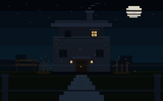

Uma campanha paralela
Antes dos acontecimentos de Redenção, a Mansão Albrecht já guardava dois corações — e um arquivo. Você assume o papel de Albrecht, o marido de Helena: responsável pelas correspondências e pelos registros do casal. Aos poucos, a rotina cotidiana revela o esquema entre a mansão e o Colégio Estadual Presidente Kennedy. Fotografias circulam, documentos somem, e um número insiste em tudo: 047.
Cinco capítulos de investigação. Nenhum tiro obrigatório. O progresso é salvo neste servidor — independente da campanha principal.
Capítulo I — A Mansão Albrecht
Pistas 0 / —
Turno 1